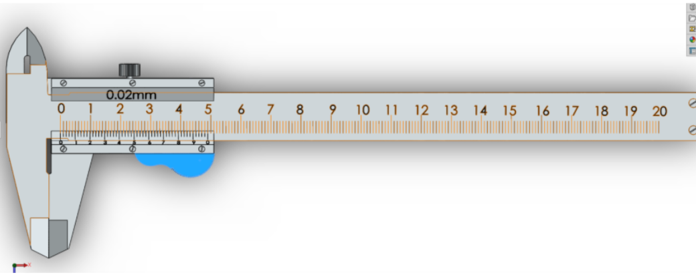

Theory
The Vernier caliper is a common precision instrument used in workshops and laboratories. It works on the principle of comparing the values of the main scale and the Vernier scale. The least count is obtained by finding the difference between one main scale division and one Vernier scale division. In most cases, the least count is 0.02 mm.
Main parts of a Vernier caliper include:
- Main scale: engraved on a rigid beam, marked in millimeters.
- Vernier scale: a sliding scale used to read fractional divisions of the main scale.
- Outer jaws: used for measuring external dimensions like the diameter of rods and shafts.
- Inner jaws: used for measuring internal dimensions such as holes and pipes.
- Depth rod: used for measuring the depth of slots, grooves, or steps.
- Lock screw: to fix the position of the Vernier scale during reading.

Fig (a): Vernier Caliper
This instrument is widely used because it can measure internal, external, and depth dimensions with one tool. It is easy to carry and simple to operate. The main drawback is that it is less accurate than a micrometer and is prone to small errors such as zero error or parallax error.
- Finding the Least Count (LC):First, we note that 1 small division on the main scale (MSD) = 1 mm. On the Vernier scale, there are 50 divisions (VSD). Using the formula: LC = 1 MSD/ Number of VSD = 1/50 = 0.02mm. Hence, the least count of the Vernier caliper is 0.02 mm.
- Adjusting the Instrument: Open the lock screw and slide the Vernier scale to move the outer jaws, inner jaws, or depth rod as per the requirement. Before measurement, ensure the caliper is at zero when jaws are fully closed to check for any zero error.
- Placing the Workpiece: Fix the workpiece (rod, plate, or hole) between the jaws of the Vernier caliper. For external measurement use the outer jaws, for internal diameter use the inner jaws, and for depth measurement extend the depth rod.
- Taking the Reading: Note the Main Scale Reading (MSR) just before the zero of the Vernier scale. Next, find the Vernier Scale Reading (VSR) by locating the line on the Vernier scale that exactly coincides with a line on the main scale. Multiply the VSR by the LC to get the Vernier correction. Final Reading=MSR+(VSR×LC).
- Example (Based on Image):MSR = 29 mm, VSR = 11 divisions (say, aligned), LC = 0.02 mm Final Reading = 29 + (11 × 0.02) = 29 + 0.22 = 29.22mm.
- Finishing:After measurement, carefully remove the workpiece, close the jaws, and lock the screw for safe keeping. Always clean the jaws with a soft cloth before storing the instrument.

Fig (b): Measurement

Fig (c): Reading

Fig (d): Reading
Advantages:
- A Vernier caliper is easy to handle and does not require any power, so it can be used anywhere.
- It gives fairly accurate readings (up to 0.02 mm), which is enough for most workshop jobs.
- The same instrument can measure outside size, inside size and even the depth of a hole, so it replaces several tools.
- It is made of strong metal and lasts long even with regular use.
- It is cheaper compared to digital calipers or micrometers.
Limitations:
- The Vernier scale is small, and beginners often find it difficult to read the divisions correctly.
- If the instrument is not held straight while measuring, parallax error can occur.
- A micrometer gives better accuracy than a Vernier caliper, so it is not suitable for very fine measurements.
- With use, the jaws may wear slightly, which can cause small errors.
- Zero error must be checked every time before use, or the reading may be wrong.
Applications
- Used to measure the outer diameter of rods, pipes, and cylinders.
- Used for checking the inner diameter of holes, tubes, and rings.
- Helpful in measuring depth of slots, grooves, and drilled holes.
- Commonly used in machine shops, fitting shops, inspection labs, and production units.
- Useful in assembling parts where accurate fitting is needed.